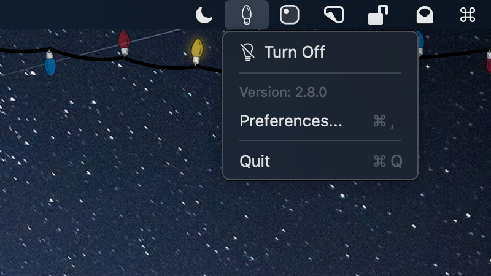

Fairy Lights
Decorate your menu bar for the holiday season.
Download Latest VersionVersion 2.10.0 for macOS 14+
Features
Menu Bar
Control your lights directly from the menu bar with just a couple of clicks.

Native
Written in Swift and designed specifically for macOS.
Lightweight
Runs quietly in the background without using much system resources.
See Fairy Lights in Action


Free and Open Source
Fairy Lights is completely free and open source, licensed under GPLv3. The code is available on GitHub for anyone to view, modify, or contribute to.